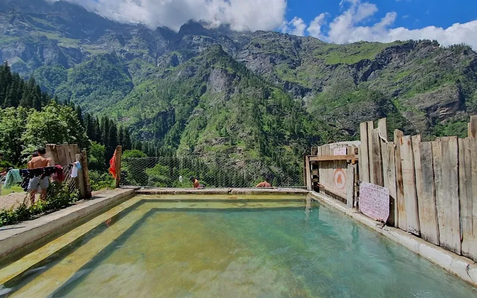
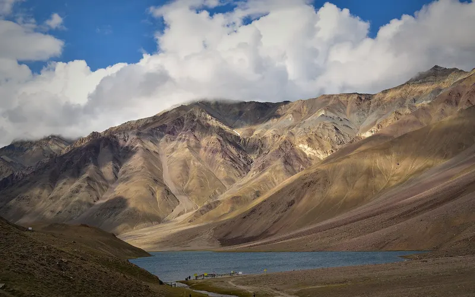
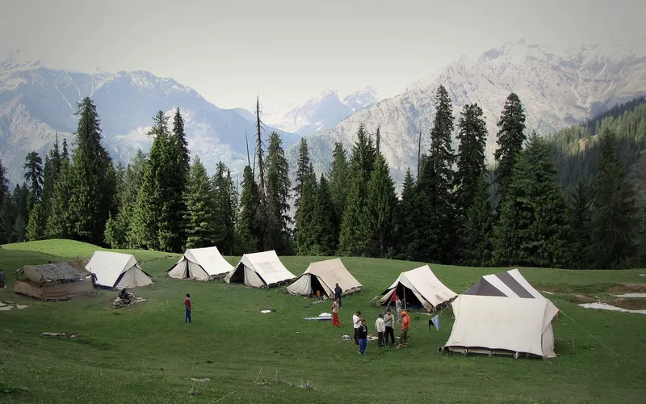
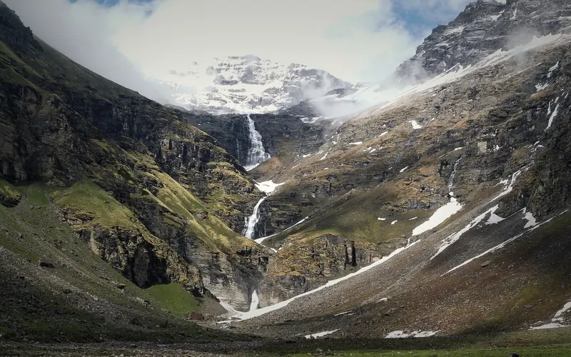
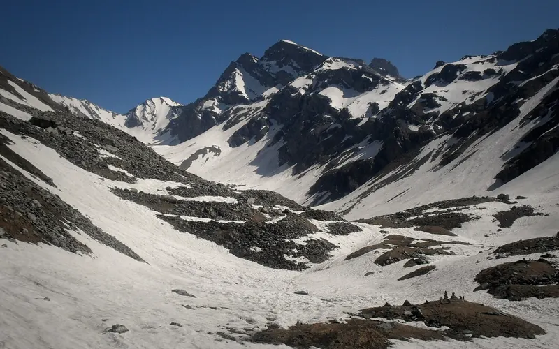
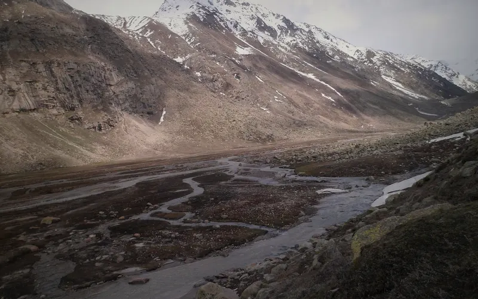

12 treks
Himachal Pradesh treks whose sources call June one of their best months.
| Trek | Highest point | Days on trail | Difficulty | Best months |
|---|---|---|---|---|
| Triund | 2,875 m | 2 | Easy | Mar–Jun, Sep–Nov |
| Prashar Lake | 2,730 m | 2 | Easy | Apr–Jun, Sep–Nov |
| Beas Kund | 3,700 m | 3 | Easy | Jun, Sep–Oct |
| Kareri Lake | 2,934 m | 3 | Easy | May–Jun, Sep–Nov |
| Bhrigu Lake | 4,300 m | 4 | Easy | May–Jun, Sep–Oct |
| Kheerganga | 2,960 m | 1 | Easy–moderate | Apr–Jun, Sep–Oct |
| Indrahar Pass | 4,342 m | 4 | Moderate | May–Jun, Sep–Oct |
| Hampta Pass | 4,200 m | 5 | Moderate | Jun–Oct |
| Sar Pass | 4,223 m | 5 | Moderate | May–Jun |
| Rupin Pass | 4,650 m | 8 | Moderate–hard | May–Jun, Sep–Oct |
| Buran Ghati | 4,575 m | 8 | Moderate–hard | May–Jun, Sep–Oct |
| Pin Parvati Pass | 5,319 m | 12 | Hard | Jun–Sep |

Easy · 2 daysPhoto: Ashish Gupta from Noida, India, CC BY 2.0
Triund
▲ 2,875 m · Best Mar–Jun, Sep–Nov
Easy · 2 daysPhoto: Casonideepika, CC BY-SA 4.0
Prashar Lake
▲ 2,730 m · Best Apr–Jun, Sep–Nov
Easy · 3 daysPhoto: Gaurav Dhingra, CC BY-SA 4.0
Beas Kund
▲ 3,700 m · Best Jun, Sep–Oct
Easy · 3 daysPhoto: Meerah Dhiman, CC BY 4.0
Kareri Lake
▲ 2,934 m · Best May–Jun, Sep–Nov
Easy · 4 daysPhoto: Vishalwiki2606, CC BY-SA 4.0
Bhrigu Lake
▲ 4,300 m · Best May–Jun, Sep–Oct
Easy–moderate · 1 dayPhoto: Photos Worldwide, CC0
Kheerganga
▲ 2,960 m · Best Apr–Jun, Sep–Oct
Moderate · 4 daysPhoto: Ashish Gupta from Noida, India, CC BY 2.0
Indrahar Pass
▲ 4,342 m · Best May–Jun, Sep–Oct
Moderate · 5 daysPhoto: Adarsh Patel, CC BY-SA 4.0
Hampta Pass
▲ 4,200 m · Best Jun–Oct
Moderate · 5 daysPhoto: balu, CC BY 4.0
Sar Pass
▲ 4,223 m · Best May–Jun
Moderate–hard · 8 daysPhoto: Nikitaparwani, CC BY-SA 4.0
Rupin Pass
▲ 4,650 m · Best May–Jun, Sep–Oct
Moderate–hard · 8 daysPhoto: Bharatkaistha, CC BY-SA 4.0
Buran Ghati
▲ 4,575 m · Best May–Jun, Sep–Oct
Hard · 12 daysPhoto: Bharatkaistha, CC BY-SA 4.0
Pin Parvati Pass
▲ 5,319 m · Best Jun–SepQuestions
Which are the treks in himachal pradesh in june?
The Treqz atlas lists Triund, Prashar Lake, Beas Kund, Kareri Lake, Bhrigu Lake, Kheerganga and 6 more.
Which is the easiest of the treks in himachal pradesh in june?
Triund: graded Easy, 2 days on the trail.
Which is the highest of the treks in himachal pradesh in june?
Pin Parvati Pass, with a highest point of 5,319 m.
Which is the shortest of the treks in himachal pradesh in june?
Kheerganga: 1 day on the trail.